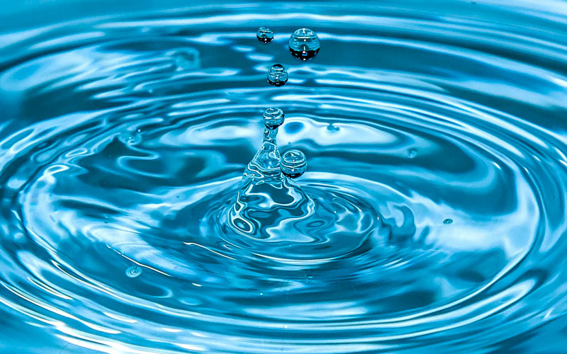
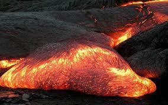
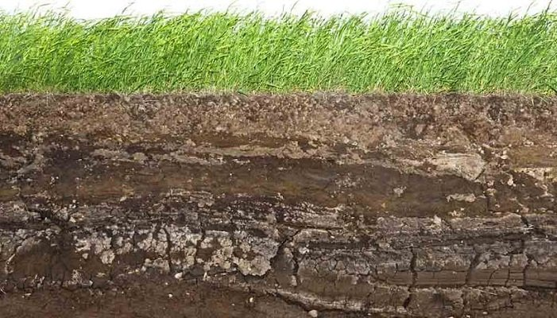

Aquí abajo voy a colocar cualquiera otra cosa que se me ocurra
¿Qué es el Agua?
Sustancia líquida sin olor, color ni sabor que se encuentra en la naturaleza en estado más o menos puro formando ríos, lagos y mares, ocupa las tres cuartas partes del planeta Tierra y forma parte de los seres vivos; está constituida por hidrógeno y oxígeno ( H 2 O ).

¿Qué es la Lava?
La lava es magma que, durante su ascenso a través de la corteza terrestre, alcanza la superficie. Cuando sale a la superficie, la lava suele tener temperaturas que oscilan entre 850 °C y 1200 °C.

¿Que es la Tierra?
Se denomina suelo o tierra a la parte superficial de la corteza terrestre, biológicamente activa, que proviene de la desintegración o alteración física o química de las rocas y de los residuos de las actividades de seres vivos que se asientan sobre él.
